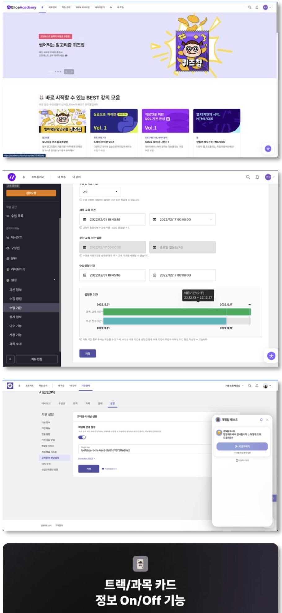

Portfolio v0.3 · Editorial direction · 2026.09
오우석 Woosuk Oh
Full-Stack Engineer, 금융 데이터 플랫폼
증권, 회계, 가상자산, 에듀테크 등 여러 분야에서 8년간 제품 기획부터 개발, 배포, 운영까지 경험했습니다.
010-2992-5586 | gta2v@naver.com | github.com/woosuk-oh
2026.08
Profile
2018년부터 증권, 회계, 가상자산, 에듀테크 등 여러 분야에서 제품을 개발해 왔습니다. 프론트엔드 개발자로 시작했지만 프로젝트에서 맡는 범위가 넓어지면서 FastAPI와 Spring Boot 기반 백엔드, 데이터 처리, 인증, 배포와 운영까지 직접 다루게 됐습니다. 딜로이트에서는 금융 회계 데이터 플랫폼을 초기 기획 단계부터 맡아 기능 범위와 기술 구조를 정하고, 이후 개발과 고객사 구축, 운영까지 경험했습니다. 회계 감사 문서를 활용한 RAG PoC와 사내 교육도 진행했고, 현재는 증권사에서 디지털감사 시스템을 운영하고 있습니다.
업무 관점
Capability
프로젝트에서 주로 다뤄온 영역
제품명과 기능 범위 정의, 화면과 데이터 흐름, 업무 프로세스 설계
React와 TypeScript 주도, Next.js, Angular, Ionic, Electron
Python과 FastAPI, Java와 Spring Boot 기반 REST API 구현
수백만 행 파싱과 정합성 검증, 적재, DB Queue, Batch와 ETL
LangChain, Chroma, BM25 Hybrid Search, Citation 기반 RAG PoC와 사내 교육
Entra ID SSO, OTP, RBAC, TLS, SAST와 DAST, IDOR 대응
고객사별 DB와 네트워크, 보안 정책에 맞춘 설치와 운영 지원
감사 데이터 분석, 디지털감사 운영, FDS 고도화 협의
제품 PM, Frontend Team Lead, 외주사와 벤더, 보안 조직 협업
반복 업무 자동화, 빌드와 설치 시간 단축, 인프라 비용 절감
Career Timeline
| 기간 | 회사 | 직급과 역할 | 한 줄 설명 |
|---|---|---|---|
| 2026.03~재직 중 | 현대차증권 | G2 / BT | 디지털감사 운영, FDS 고도화, 차세대 전환 영향도 분석 |
| 2023.07~2026.03 | 딜로이트안진 | Senior Consultant AI Assets & Analytics | FinanceDataHub, RAG PoC와 교육, RightHouse |
| 2023.03~2023.07 | 피어테크 | Frontend Team Lead | GDAC 가상자산 거래 플랫폼, 팀 리딩 |
| 2020.11~2022.09 | 엘리스그룹 | Software Engineer | K-Digital Training LMS와 LXP, 인증과 운영 자동화 |
| 2019.05~2020.10 | 테이블매니저 | 매니저 / Frontend Developer | 예약 관리 서비스, Analytics Dashboard |
| 2018.08~2019.03 | 에피케이터 | Assistant / Tech Lead 역할 | 통합 백오피스 재개발과 AWS, Jenkins 운영 |
| 2018.03~2018.07 | 신텍정보시스템 | 프리랜서 / 개발자 | 현대자동차 해외 딜러용 시승 관리 앱 |
프론트엔드에서 시작해 제품 전체와 데이터, 금융 시스템까지 업무 범위를 넓혀왔습니다.
Tech Stack ①
실제 프로젝트에서 사용한 경험을 중심으로 정리했습니다.
주력 기술
기술 선정부터 설계, 구현, 배포와 운영까지 가장 깊게 다룬 영역
Frontend
웹과 데스크톱, 모바일 화면 구현
Backend와 Batch
Python과 Java 두 계열을 모두 사용
데이터 처리
수백만 행 적재와 검증, 대시보드 제작
배포와 운영
클라우드와 사내 서버 환경 모두 대응
Tech Stack ②
감사 문서 RAG PoC와 금융 데이터 플랫폼에서 다뤄본 기술
인증과 권한
사내 사용자와 외부 사용자를 위한 인증 및 권한 체계 구현
보안 대응
보안 진단과 모의해킹 결과를 직접 재현하고 원인을 확인해 수정
PoC 및 교육 구현
PoC 및 사내 교육에서 직접 구현하고 시연
RAG 평가와 확장 기법
교육 준비와 데모 코드를 바탕으로 실제 업무에서의 적용 가능성과 활용 방향을 검토
FinanceDataHub ① 제품 개요
딜로이트안진 | 2023.07~2026.03 | 제품 기획, PM, Full-Stack Developer, 고객사 구축과 운영
문제
회계사와 감사 실무자는 Excel과 여러 외부 조회 사이트를 오가며 데이터를 수집하고 검증하는 작업을 반복하고 있었습니다. 초기 버전이 만들어진 뒤에도 실제 업무 요구와 고객사 운영 환경에 맞춘 개선이 계속 필요했고, 대용량 처리 중 작업 중단이나 고객사별 보안 환경 차이도 함께 해결해야 했습니다.
프로젝트에서 맡은 역할
제공 기능
외부정보 조회와 데이터 분석 기능군
결과
FinanceDataHub ②
Next.js 화면, FastAPI REST API와 관계형 DB 연동 구조를 설계하고 구현했으며, 사내 구축형 웹 서비스를 클라우드 환경으로 전환했습니다. 초기 AWS 환경은 외부 벤더가 구성했고, 이후 EC2와 S3, 보안그룹, Nginx Reverse Proxy, 인증서 설정을 확인하며 운영 이슈와 개선 작업을 담당했습니다.
배포 유형별 구성
사례 1
사례 2
DB Queue 도입 전후
FinanceDataHub ③
Electron 전환 담당 범위
외주사 담당 범위
패키징, 설치파일, 자동 업데이트, 배포 자동화
RAG PoC
딜로이트안진 | 2025 | RAG PoC 구현
문제
생성형 AI를 회계 감사 업무에 활용하려는 수요가 늘고 있었지만, 감사 업무에서는 답변 내용만큼 근거를 확인할 수 있는지가 중요했습니다. 답변이 그럴듯하더라도 어떤 문서를 근거로 했는지 확인할 수 없으면 실제 업무에 활용하기 어렵기 때문에, 답변과 함께 근거 문서와 출처를 제공하는 구조를 먼저 검토했습니다.
구현
파이프라인
질의응답 Citation 예시 목업
평가 및 확장 검토
RAGAS의 Faithfulness, Answer Relevancy, Context Precision을 평가 관점에서 검토했고, Parent Document, HyDE, Reranking 예제를 통해 검색 품질 개선 방향을 확인했습니다. GraphRAG와 Multi-modal RAG는 회계 감사 업무에서 활용할 수 있는 확장 방향을 검토했습니다.
RAG 적용 기준
01
답변마다 참고 문서와 페이지를 함께 제공
02
검색된 근거가 충분하지 않으면 답변 생성을 제한
03
AI는 근거 검색과 답변 지원 역할로 한정하고 최종 판단은 감사인이 수행
04
질의, 답변과 참조한 문서 버전을 기록해 이후에도 확인할 수 있도록 구성
근거 유무에 따른 분기
사내 교육
RightHouse ① 문제와 구현
딜로이트안진 | 2023.08~2026.03 | 풀스택 개발, 고객사 구축과 운영
문제
법인카드, 총계정원장, 은행거래내역을 수작업으로 대조해 자금사고 징후를 확인하고 있었습니다. 데이터가 수백만 행 규모여서 적재와 검증에 시간이 많이 들었고, 분석 로직이 실제 회계 판단과 맞지 않으면 오탐이 늘어날 수 있어 회계사와 함께 기준을 조정해야 했습니다.
데이터 흐름
구현
RightHouse ② 탐지 로직과 결과
주요 탐지 로직
이상거래 분석에 적용
Jaccard 계수 기반 중복 거래처 식별
법인카드와 접대비 분석, 공휴일 여부와 업종 분류 로직
결과
성과
약 30%
동일 데이터의 반복 호출을 줄이기 위해 호출 이력 관리와 캐싱을 적용해 외부 API 비용 약 30% 절감
분석 결과 화면
거래처 분석과 Tableau 결과 화면
Business Report Converter
딜로이트안진 | 2024.07~2024.11 | PM, 풀스택 개발
문제
전자공시 문서를 작성하고 취합하는 과정이 메일과 파일로 분산되어 있어 담당자별 진행 상태와 검토 버전을 추적하기 어려웠습니다.
결과
역할과 구현
사업보고서 작성 과정을 분석해 담당자 할당부터 파일 작성과 통합, 리뷰, 알림, 버전 관리까지 하나의 업무 흐름으로 설계했습니다. DSD, HTML, Excel 간 변환 기능을 포함해 개발과 배포까지 담당했습니다.
업무 흐름 개선
양방향 변환 구조
현대차증권 금융 IT
현대차증권 | G2 / BT | 2026.03~재직 중 | 금융 IT 시스템 운영과 영향도 분석
수행 업무
업무 영역
피어테크 GDAC
피어테크 | Frontend Team Lead | 2023.03~2023.07
구현
팀 리딩
개발 생산성
패키지 설치
약 951초 → 30초
Yarn Berry 적용
빌드 시간
약 60~70초 → 30~40초
Webpack 설정 개선
엘리스그룹 K-Digital Training
엘리스그룹 | Software Engineer | 2020.11~2022.09
구현
서비스 규모
사용자 구분
개선 결과
반복 등록 업무
월 40시간↑ → 약 20분
운영 업무 자동화
빌드 시간
81.61초 → 42.22초
Node.js 14 → 16 전환

수강생 과정 화면
테이블매니저
테이블매니저 | 매니저 / Frontend Developer | 2019.05~2020.10
수행 업무
매장과 고객사 지표 대시보드
에피케이터와 신텍정보시스템
Assistant | 2018.08~2019.03
프리랜서 | 2018.03~2018.07 | 인벤티스 연계 프로젝트
그 외 초기 경험
세탁특공대 프론트엔드, 서울대학교 의과대학 납품용 트라우마 치료 Android 앱, 드론 비행 가이드 Android 앱
스톤아이에서 개발 인턴과 교육 업무를 경험했고, 드론, Arduino, C 강의와 교재 집필에 참여
아이온커뮤니케이션즈에서 서비스 기획 인턴을 경험했고, 예비창업과 창업 인턴 프로그램에 참여
Education | Certification | Awards
수상
| 일자 | 수상 | 주제 |
|---|---|---|
| 2017.10 | 대상(미래창조과학부 장관상) | 글로벌 이노베이터 페스타 강원, 충전 시간에도 작동 가능한 방범 드론 |
| 2017.10 | ITEX 국제 발명대회 은상, 이노비즈협회장상 | 어린이를 위한 교육용 알고리즘 장난감 블록 |
| 2015.09 | 서울창조경제혁신센터 대상 | IoT 해커톤, 자율주행 스마트 안전 삼각대 |
| 2014.09 | 창업진흥원 우수상 | 창업인턴 창업교육, 음성인식 Bluetooth 제어 공기청정기 |
상장 스캔
학력
한국공학대학교(구 한국산업기술대학교) 컴퓨터공학 학사
2012.03~2019.08 졸업
자격
정보처리기사, 한국산업인력공단
2019.08
교육
T아카데미(SK Planet) Android 전문가 과정 (2016.10~2016.12), 기획 전문가 과정 (2016.04~2016.05)
병역
산업기능요원 복무 후 소집해제
2019.10~2022.08
gta2v@naver.com | 010-2992-5586 | github.com/woosuk-oh